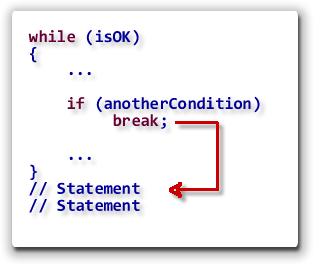
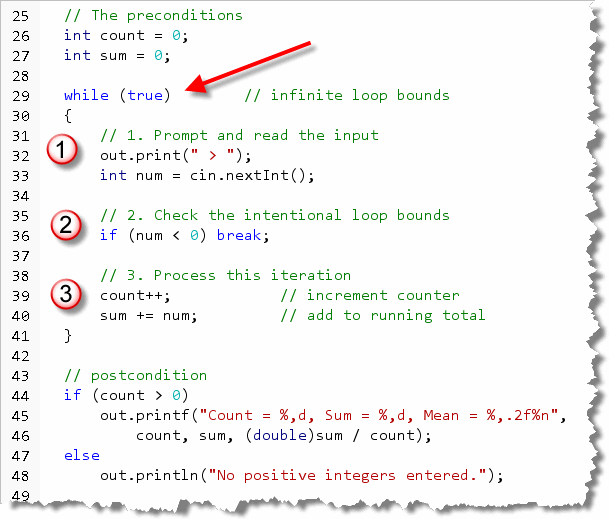
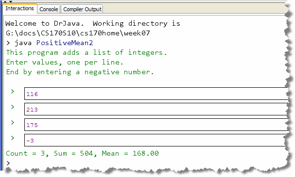
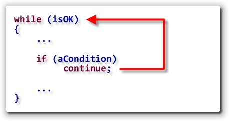
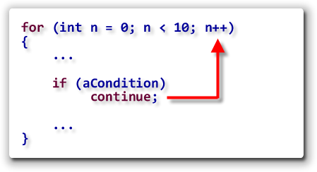
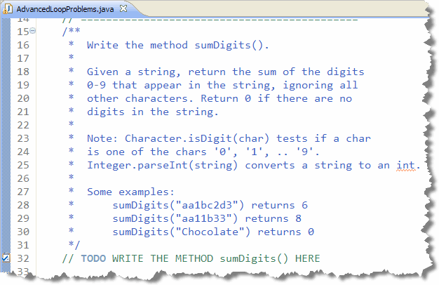
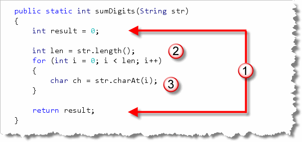

Java's selection and iteration statements are called flow-of-control statements because they provide a highly structured method of conditionally and repeatedly executing a particular section of code.
In years past, however, before the control structures we use
today, programmers still needed the equivalent of if
statements and loops.
 Rather than relying on built-in language
features, though, these iron-age programmers constructed their
own flow of control statements, using the jump.
Rather than relying on built-in language
features, though, these iron-age programmers constructed their
own flow of control statements, using the jump.
The jump statement often uses another name; even programmers who
have never heard of the jump have heard of its nom de plume,
the goto statement. The computer scientist
Edsger Dijkstra, (shown here), is best known for his landmark
paper published in the journal, Communications of the ACM,
entitled GOTO Considered Harmful. The paper, which pointed
out the dangers of using the goto statement, and
urged its retirement, ignited a storm of controversy and
is often credited with starting the structured programming
revolution.
The goto is
one of Java's fifty reserved words, but it isn't actually
implemented as part of the language, (like it is in C++ and C#).
If your dream is to arbitrarily jump willy-nilly hither-and-yon
through your code, you'll have to find another programming
language to accommodate you. When it comes to loop control,
however, Java hasn't abandoned the jump altogether. Java has two
statements—break and continue—that
let you do your jumping in a controlled fashion.
The break Statement
The break statement is used in two different
circumstances, but both circumstances are quite similar.
The break statement allows you to jump out of:

- a
switchstatement - a loop
When a break statement is encountered in the
body of a loop, your program jumps to the statement immediately
following the loop body, as you can see in the illustration
shown here.
Any remaining statements within the loop body are skipped. The test expression is not re-evaluated; the termination occurs regardless of the value of the test expression.
Although it can be misused, allowing you to write
code that is as convoluted as any produced by the
goto statement, the break can
sometimes be used to make your loops simpler and clearer,
especially when used to create a loop-and-a-half.
Many textbooks discourage the use of the break
statement as part of a loop, but I disagree. Research has shown
that students who use the break statement following
the loop-and-a-half pattern shown below, understand the termination
condition better and consistently write correct loops more often.
If you'd like to read more on this topic, I've included a link to
Eric Roberts' 1995 paper,
"Loop Exits
and structured programming: Reopening the debate", given
at the Twenty-sixth SIGCSE Technical Symposium on Computer
Science Education (1995). Although it's several years old, and
mainly concerned with Pascal, the points the Roberts makes are
still applicable to Java.
Loop-and-a-half
As you know, the built-in loops test either before the loop body, or after the loop body. Sometimes, however, its much more convenient to test inside the loop body. This is especially true when a primed loop requires many lines of code just to set up the loop condition.
This can be done by using a Boolean flag, like we did in the last section. There are pros and cons to this approach.
- Con: using a flag introduces another variable, which adds to the "mental overhead" of understanding the function.
- Pro: the flag can be used to consolidate several different, otherwise unrelated, bounds conditions, making the overall loop structure clearer.
I, personally, feel that flag-controlled loops only
make sense in this second situation: where you have several
different bound conditions and you can use nested or
sequential if statements to initialize a
single Boolean flag.
The PositiveMean2 Example
Let's look at an example of a loop that uses the
break statement to implement a loop-and-a-half.
PositiveMean2.java (which you can find in this chapter's
code folder) is a rewrite of the
PositiveMean example from Section 7.5—The while
Loop.
Instead of using a primed loop that reads
a number before the loop, and then reads the next number
at the bottom of the loop, this version of the application
uses a single read statement, along with a
break statement to exit the loop:

Note that thewhile loop uses a bounds condition
of true; that means that this is an
infinite loop that can only exit using the
if statement in its center.
Often, in a loop-and-a-half, you'll put the necessary
bound here, to make sure a loop doesn't run past the end of
an input String, for instance.
Inside the loop you'll find:
- An "input" section in the top half of the loop. Of course, you'll recall that this is exactly the same structure that was used for the flag-controlled sentinel loop in the last lesson.
- The loop condition
doesn't need to test for the sentinel value, because it's
tested in the middle of the loop body, using
and
ifstatement. When the sentinel is encountered, the loop is exited using thebreakstatement. This is the loop's intentional bounds. - After the "test in the middle", the actual
processing takes place. Unlike a flag-controlled loop,
this code does not need to be placed inside an
elseblock, since thebreakstatement causes a jump past this code when it is encountered.
You can
run the program as an applet (written as an
ACM console program) by clicking the hyperlink
in this sentence. Even better, though, is to run it on your
own machine in DrJava. Here's what the program looks like when it runs on
my machine:

The continue Statement
The continue statement is a jump statement like
break, but unlike break,
the continue jumps back to the loop
condition, rather than jumping out of the loop.
Exactly what that means depends upon which loop you're using:
- For the
whileloop and thedo-whileloop, thecontinuestatement jumps to thebooleantest, skipping backward (while) or forward (do-while) as necessary.

-
With the
forloop, control jumps to the update expression, instead of the test expression.

Hands On—Summing Digits Yet Again
Let's look at an example from where you might want to
use the continue statement with a for
loop. We've already seen two programs that sum the digits in
an integer. How about summing the digits in a String?
Well, that's easy. To turn a String containing digits
into an integer, you can use the Integer.parseInt()
method. You can walk through the String with a
for loop, extracting each single-character
digit substring. Use Integer.parseInt() on the substring,
and add that to the running total.
There are two complications, though:
- all of the characters inside the
Stringmay not be digits. If a character isn't a digit, then you'll want to skip it. - our plan depends on extracting single-character substrings,
but the
Character.isDigit()method, which we need to use to determine if an individual character is a digit, takes acharparameter, not aString.
Neither of these are huge problems, but they mean that the
code is a little bit more complex than the original plan
would suggest. The continue statement can make
the solution a little simpler. Open AdvancedLoopProblems.java
in this chapter's code folder, and find the sumDigits function.
Here's the problem summary:

The Solution
The first step in solving this problem is to put in the
"boiler-plate" skeleton code; that is, the code you really don't
need to think about. Here's what that looks like:

Notice that:- As with any function, our first step is to
create and initialize a variable to hold the returned
value (
resultin this case), and then add areturnstatement at the end of the function. - Since we need a loop, the next step is to determine
the loop bounds. As with most
Stringfunctions, you'll use the length as a count bounds. Since we are going to visit every character, we don't need to subtract anything from the length, like we would if we were comparing substrings of different lengths. - Finally, we need to add the "reading" or data input
part. We know that we'll need to process each character,
so we can use the
charAt()function like this.
Using continue
Now that we have a character, we have two choices. If it is a digit, we want to convert it to an integer and add it to a sum. If it is anything else, we want to just ignore it and go get the next character.
This is where the continue statement comes into
play. Use the Character.isDigit() method to check
if the character is a digit. If it is not, the
continue statement sends you right back up
to the loop update expression, like this:

Converting the Digit: Two Methods
At this point, we know that the character is a digit, and so we want to convert it to an integer, and add that integer to the sum. (Don't just add the character to the sum. The numeric Unicode value of the digit '1' is 49, and that is what would be added. You won't get the answer that you expect.)
To convert your digit to an integer, you can use
Integer.parseInt() like this:
sum += Integer.parseInt("" + ch);
Note you have to use String concatenation
because Integer.parseInt() only accepts
String parameters.
Method 2: Character Arithmetic
Another alternative is to take advantage of the fact that
all of the digit characters are contiguous, located
right next to each other in the Unicode (or any other
character set.) Since char variables are actually
16-bit numbers, you can use them in arithmetic expressions,
including subtraction.
Now, suppose ch contains the digit character
zero. If you subtract the char literal
'0' from ch you'll get the
integer value 0. The same thing works for the
other digit characters, since they are right next to
each other in the character set.
Thus, instead of using concatenation and
Integer.parseInt(), you can just do the
conversion and the addition like this:
 Go ahead and run Check and all of your tests
should now pass.
Go ahead and run Check and all of your tests
should now pass.
Labeled break and continue
One of the problems with nested loops is that the
break and continue statements stop
"working." Actually, they don't stop working, exactly; they just
don't work quite the way you'd like. Here's the problem.
Both break and continue work on
the current loop. That means, when you are in an inner
loop, a break statement only exits the inner loop,
it doesn't get you out of the outer loop. Java has a facility
to address this deficiency, called the labeled break and
the labeled continue. Here's how they work:
- Before each loop, add a label. A label is simply an identifier that ends in a colon.
- Inside the loop, use the name of the label, along
with the keyword
breakorcontinue, to jump to the loop following the label.
Here's an example:
// Labeled break and continue
int count = 0;
Outer: // label ends with a colon
for (int outer = 1; outer < 1000; outer++)
{
for(int inner = 1; inner < 1000; inner++)
{
count++;
if ( inner % 2 == 0) continue;
if ( inner % 201 == 0 ) break;
if ( outer % 25 == 0 ) continue Outer;
if ( outer % 51 == 0 ) break Outer;
}
}
Can you follow the flow of control in this nested loop? Let's analyze it:
- The outer loop goes from 1 to 999, and for every revolution
of the outer loop, the inner loop should also go around 999
times. If there were no
breaksorcontinues, then the loop would repeat 998,001 times. - In the inner loop, every even value where (
inner % 2 == 0) usescontinueto skip back to the update expression of the inner loop. However, wheninnerreaches 201 (an odd number)breakends the inner loop. The inner loop, then, never executes more than 201 times per revolution of the outer loop. - On the 25th repetition of the outer loop, there is a
labeled
continue. The target of thiscontinueis the labelOuter. This causes a jump to the expressionouter++, (after updating count) and the 25th and 50th iterations of the inner loop are skipped. - Finally, on the 51st repetition of the outer loop, the
labeled
breakis encountered. This jumps to the statement following the closing brace of the loop labeled byOuter.
The result? The variable count records 201
iterations of the inner loop times 48 iterations of the outer
loop, plus 3 entries to the inner loop with early exit (two
continue Outer and one
break Outer). The final total for
count is 9,648 instead of 998,001.
If you find it confusing and difficult to follow the flow of
control with all of these breaks and continues, then you're
starting to get an idea of what early programmers had to go
through to understand complex programs that contained
spaghetti code like this, and why using
jump statements is generally discouraged.

Java Jumps Summary
- In early programming languages, an unconditional jump
statement, called the
gotowas used as the main flow-of-control statement. Through the writings of computer scientists like Edsger Dijkstra, structured control statements likeif-elseand loops have mostly replaced the use of unconditional jumps. - While Java has reserved
gotoas a keyword, it is not implemented in the language. Java does have two limited versions of thegoto: thebreakandcontinuestatements. - The
breakstatement is used to unconditionally exit a block of code. The statement is only valid inside aswitchcode block and from inside a loop. Abreakdoes not exit from inside anifstatement. - When a
breakis encountered, execution jumps to the line of code following the control structure, that is, following the body of the loop or the closing brace in theswitch. - The
breakstatement can be used, along withif, to write a simpler form of the indefinite loop, called a loop-and-a-half. When used in this controlled and restricted manner, it can actually make your loops easier to understand. - The
continuestatement only works inside a loop, where it skips the remaining statements inside the loop body and jumps to the loop condition (in awhileordo-while) or to the loop's update expression (in aforloop). - The
continuestatement must be used with anifstatement to avoid a section of unreachable code. In addition, use of thecontinueinside a counter-controlledwhileloop can lead to unreliable counter updating. - The labeled versions of
breakandcontinuecan be sometimes be used with nested loops, but can quickly produce complex spaghetti code that is hard to follow, and thus likely to be unreliable.